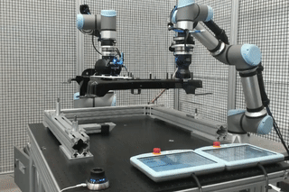

Bimanual Manipulation
Full IROS 2022 Presentation (7 Minutes)
Approach
In our approach, we combine multimodal sensor data acquired from force/torque sensors attached to each robot's wrist, visual object tracking, and robot joint states to learn a Bayesian Interaction Primitive. The learned model then infers the temporal and spatial progress of the insertion task in terms of a phase value \(\phi\). This phase \(0 \leq \phi \leq 1\) describes the progress of the task, allowing us to represent varying trajectory lengths in the real world on a unified scale. The phase estimation is key to enabling temporal inference over the task progress to appropriately react to perturbations.
Phase Estimation During Perturbation

When exposed to external perturbations or facing difficulties during the insertion, the phase estimate \(\phi\) is continuously adjusted.
Motion Consistency

When the phase \(\phi\) is adjusted by the algorithm, predicted motions remain in a similar motion domain, even when pused outside of demonstrated behavior.
When misalignments or other external perturbations are detected, the phase estimation, together with the underlying admittance controller, are used to overcome obstructions. This allows the system to correct and even reverse the estimated task progress, resulting in multiple insertion attempts. At its core, the combination of phase estimation and adaptive admittance control enables smooth insertions, as shown in the videos above.
To train the bayesian interaction primitive, we collect thirty demonstrations in the real world by moving the bracket, either with a space mouse, allowing for six-dimensional manipulation, or by utilizing kinesthetic teaching.
Teleoperation (Space-Mouse)
Kinesthetic Teaching
In our user study, we show that kinesthetic teaching is preferred due to its intuitive maneuvering; however, data collected with the space mouse enables the usage of force/torque sensor data during inference since all measured disturbances can be attributed to interactions with the environment. Especially the availability of force/torque sensor data has been shown to provide a 20% improvement in task performance. Overall, when using force/torque data, our system acheives a 90% success rate.
BibTeX
@article{stepputtis2022bimanual,
author = {Stepputtis, Simon and Bandari, Maryam and Schaal, Stefan and Ben Amor, Heni},
title = {A System for Imitation Learning of Contact-Rich Bimanual Manipulation Policies},
journal = {IEEE/RSJ International Conference on Intelligent Robots and Systems (IROS)},
year = {2022},
}